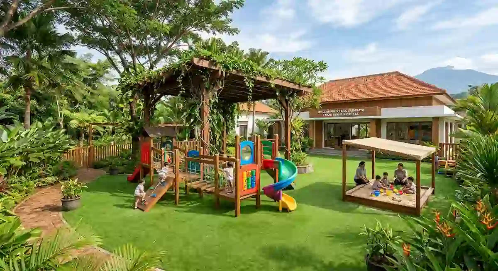

1. Konsep Dasar Desain PAUD dan TK
Desain PAUD dan TK adalah perancangan bangunan belajar untuk anak usia dini yang mengutamakan keselamatan, pengawasan mudah, cahaya dan udara alami, serta ruang bermain yang mendukung perkembangan anak.
- Keselamatan anak menjadi prioritas utama, mulai dari pemilihan sudut perabot hingga pengamanan pagar dan gerbang luar.
- Pengawasan visual: Guru harus mudah mengawasi anak dari berbagai titik tanpa banyak sudut buta (blindspot).
- Lingkungan sehat: Cahaya alami, udara segar, dan area bermain luar ruang sangat mendukung tumbuh kembang fisik dan mental anak.
- Aksesibilitas & lalu lintas: Area antar-jemput perlu dirancang agar tidak mengganggu arus lalu lintas di sekitar lokasi sekolah.
- Aspek legalitas: Perizinan lembaga mengikuti dinas pendidikan setempat, sementara arsitek membantu perancangan fisik dan dokumen PBG.
2. Ruang Apa Saja yang Perlu Ada di PAUD atau TK?
Kebutuhan ruang sangat bergantung pada jumlah murid, kelompok usia, serta kurikulum yang diterapkan. Namun secara umum, sebuah fasilitas pendidikan anak usia dini mencakup:
- Ruang kelas: Dirancang dengan ukuran dan perabot ergonomis yang disesuaikan dengan tinggi serta aktivitas interaktif anak.
- Area bermain dalam ruang (indoor playground): Bermanfaat sebagai tempat beraktivitas saat hujan atau cuaca Surabaya sedang terlalu panas.
- Area bermain luar ruang (outdoor playground): Dilengkapi dengan peneduh alami/kanopi dan permukaan lantai yang aman dari benturan.
- Toilet anak: Fasilitas sanitasi khusus dengan ukuran kloset dan wastafel yang disesuaikan agar mudah diawasi guru.
- Ruang guru dan administrasi: Terletak strategis dengan pandangan langsung menuju area pintu masuk utama.
- Area penerimaan dan penjemputan: Menyediakan ruang tunggu yang nyaman bagi orang tua atau pengantar.
- Ruang serbaguna / UKS sederhana: Digunakan untuk kegiatan pertunjukan bersama maupun penanganan awal medis saat anak kurang sehat.

3. Bagaimana Menjaga Keselamatan Anak Lewat Desain?
Penerapan keselamatan pada bangunan PAUD dan TK memerlukan perhatian detail pada setiap elemen arsitektur:
- Pengawasan visual: Terapkan tata ruang terbuka dengan jendela transparan dan partisi rendah agar guru dapat memantau seluruh pergerakan anak secara fleksibel.
- Material lantai: Pilih material yang tidak licin, mudah dibersihkan, serta tambahkan alas empuk (seperti matras EVA atau rumput sintetis) pada area bermain aktif.
- Sudut dan tepi ruang: Pastikan dinding, meja, dan perabot tidak memiliki sudut tajam (gunakan tumpul/rounded edge) atau berikan pelindung karet.
- Tangga dan ketinggian: Dilengkapi railing pengaman ganda (ketinggian dewasa dan anak), serta pembatas yang menutup rapat agar tidak mudah dipanjat.
- Pintu dan gerbang: Sistem kontrol akses pintu harus jelas dengan kuncian tinggi agar anak tidak bisa keluar ke jalan raya tanpa pendampingan.
- Penggunaan kaca: Manfaatkan jenis kaca tempered/laminated dengan penempatan yang aman dari potensi benturan fisik anak saat berlari.
- Instalasi listrik: Letakkan stop kontak dan sakelar di atas jangkauan anak atau gunakan penutup pengaman berstandar.
4. Bagaimana Mengatur Cahaya, Udara, dan Material?
Ruang belajar anak sebaiknya selalu terang dan sejuk. Penempatan jendela yang memadai membawa pasokan sinar matahari alami untuk membunuh kuman, sementara ventilasi silang menjaga sirkulasi udara tetap segar di tengah iklim Surabaya yang panas.
Untuk pemilihan material, prioritaskan permukaan yang mudah dibersihkan dari coretan, tahan kelembapan, serta bebas bahan kimia berbahaya (non-toxic paint). Panduan mendalam mengenai pencahayaan dan material dapat Anda baca di artikel pentingnya pencahayaan alami dan panduan memilih material bangunan tahan cuaca ekstrem tropis.
5. Apa Perbedaan Kebutuhan Ruang Berdasarkan Kelompok Usia?
Setiap tahap usia anak memiliki kebutuhan motorik dan metode pembelajaran yang berbeda. Berikut adalah matriks gambaran umum untuk membantu perencanaan tata ruang bersama tim arsitek:
| Aspek | Kelompok Bermain (KB / Daycare) | TK A (Usia 4-5 Tahun) | TK B (Usia 5-6 Tahun) |
|---|---|---|---|
| Aktivitas Utama | Esplorasi sensorik dan bermain bebas. | Bermain terarah, mengenal huruf dan angka. | Persiapan belajar dasar dan kemandirian. |
| Kebutuhan Ruang | Area lantai karpet yang luas, empuk, dan bebas hambatan. | Meja kelompok kecil dan sudut-sudut kegiatan tema. | Meja belajar individual/berpasangan dan sudut baca. |
| Toilet & Sanitasi | Dekat dengan area kelas, butuh pendampingan penuh. | Sangat dekat kelas, anak mulai latihan mandiri. | Toilet terpisah gender, lebih mandiri dengan pengawasan. |
| Intensitas Pengawasan | Sangat dekat dan melekat secara visual. | Pengawasan dekat dari area tengah. | Pengawasan sedang dengan melatih kemandirian. |
6. Bagaimana dengan Area Antar-Jemput dan Perizinan?
Waktu antar dan penjemputan siswa selalu menimbulkan lonjakan kepadatan kendaraan dalam durasi singkat. Sediakan area tunggu bagi orang tua di dalam tapak lahan, rancang jalur lalu lintas kendaraan satu arah (one-way drop-off zone), dan tentukan titik naik-turun anak yang aman agar tidak memicu kemacetan di jalan umum.
Dalam hal legalitas, perizinan operasional lembaga pendidikan mengacu pada standar Dinas Pendidikan setempat. Sementara itu, arsitek berperan membantu pemenuhan keandalan fisik bangunan dan pengurusan dokumen Persetujuan Bangunan Gedung (PBG). Bagi Anda yang berencana mengalihfungsikan rumah tinggal menjadi PAUD, simak panduan lengkapnya di artikel peran arsitek dalam pengurusan PBG/IMB serta tips memilih konsultan di panduan lengkap memilih jasa arsitek Surabaya.
7. Kesalahan Umum saat Merancang PAUD dan TK
- Banyak sudut buta (blindspot): Sekat ruang yang terlalu masif membuat guru kesulitan memantau keselamatan anak.
- Area bermain luar tanpa peneduh: Menjadikan fasilitas luar ruang tidak dapat dipakai saat terik siang hari.
- Toilet yang jauh dan tersembunyi: Menyulitkan akses anak saat mendesak dan meningkatkan risiko keselamatan.
- Mengabaikan sirkulasi drop-off: Menyebabkan antrean kendaraan orang tua meluber ke jalan utama dan mengganggu tetangga.
- Warna dan dekorasi berlebihan: Terlalu banyak kombinasi warna kontras yang ramai justru membuat anak cepat lelah dan sulit fokus.